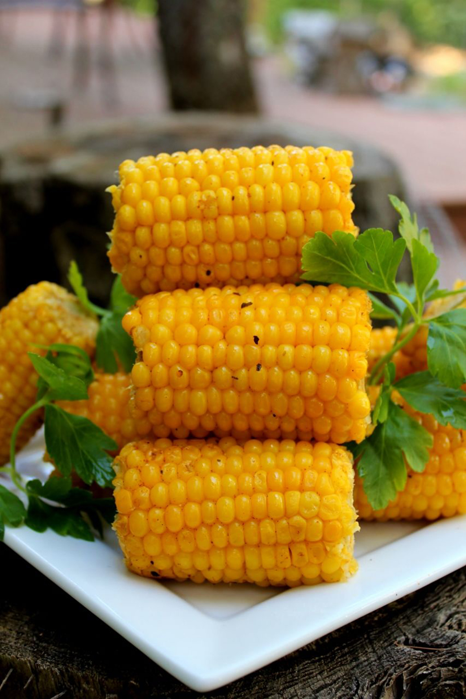

BBQ Corn on the Cob

Description
Nothing like you seen before the this bbq corn on the cob flavor is to die for. As soon as you take a bite you feel like your in a different planet. Your friends and families would enjoy this and the same goes for you. This bbq corn on the cob is homemade and with natural ingredients. You do not have to worry about it being processed.
Ingredients
- 1 teaspoon chili powder
- ⅛ teaspoon dried oregano
- 1 pinch onion powder
- cayenne pepper to taste
- garlic powder to taste
- salt and pepper to taste
- ½ cup butter, softened
- 6 ears corn, husked and cleaned
Steps
- Preheat grill for medium-high heat.
- In a medium bowl, mix together the chili powder, oregano, onion powder, cayenne pepper, garlic powder, salt, and pepper.
Blend in the softened butter. Apply this mixture to each ear of corn, and place each ear onto a piece of aluminum foil
big enough to wrap the corn. Wrap like a burrito, and twist the ends to close.
- Place wrapped corn on the preheated grill, and cook 20 to 30 minutes, until tender when poked with a fork. Turn corn
occasionally during cooking.